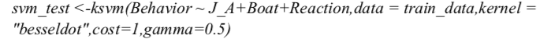

Introduction
This project goal is to discuss how boat distance, dolphins' reactions and juvenile dolphins'appearance will affect researchers' observations about common dolphins' feeding behaviors. It is challenging to observe dolphins’ feeding behaviors in great Aegean Sea area since their feeding behaviors are mostly under the sea surface. In order to better observe a long time dolphins’ feeding behavior without interfere their normal feeding process, we want to build a model to predict possible dolphins’ feeding behaviors during boat survey. Due to the randomness of boat survey(like the weather condition and researcher’s health condition on the sea) , we would like to increase the efficiency to observe dolphins’ feeding behavior by building machine learning models, in a handful and practical way.
Key findings
Based on our current facilities, we did not include the environmental factors into models, rather I used our boat distance, dolphin’s reactions and juvenile dolphin’s appearance factors, which are more practical data to collect in boat survey. However, for future study, I suggest we include the environmental factors data that we collected during boat survey into the model(eg,.salinity, PH value), which can be more accurate than data on Copernicus website and also can increase the model accuracy dramatically.
Methodology
Dataset Introduction
All data is from Archipelagos, Institute of Marine Conservation, collected from 2016 March to 2017 May, and the sample size is 230.
Possible Variables
1. J_A: Juvenile appearance. Factor Data.
< 0: dolphins accompany with juvenile; 1: adult dolphins only >
2. Our.boat.dis : Our Boat Distance to the dolphins. Numerical Data
3. Boat: Numbers of Boat appears around the dolphins. Factor Data(1—5)
4. Reaction: Dolphins reactions to the boats. Factor Data. NEG: negative, NEU: neutral, POS: positive reactions
5. Movement: Factor Data (AL, EC, FR, LI, SP)
Dataset Validation
The response in our model is the probability of feeding behaviors. We categorized all observed dolphin behaviors into feeding and non-feeding behaviors. We have 86 feeding behavior and 144 non-feeding behaviors( traveling, socializing, swimming and etc).Their ratio is within 1:2,which is an acceptable proportion even though the positive and negative data is not perfectly 1:1. In the reaction variable distributions, we can see NEU has 55% amount, POS has 37.4% amount, while NEG only has 7%. This data reveals the truth that common dolphin’s are friendly and hardly show negative reaction to researchers, and thus we don’t plan to adjust the proportion of this.
Model Selection
Because we have a binary classifier which is feeding or not feeding, I then selected GLM, Naive Byes, SVM and random forest as candidate models.
- Logistic Regression
Logistic model is an elementary model for binary classifiers. Similar to linear regression model, logistic model trying to conclude relationship between the mean of dependent variables with independent variables. The difference if that the generalized linear model requires a link function which enables researchers to convert categorical (2-dimensional here) variables into a continuous/ numerical data and then use the same principles of linear regression to fit the model, as indicated below.
The link function, g, describes how the mean response, EY = μ, is linked to the covariates through the linear predictor. So here, our response is the probability of feeding behavior appearance. And the model is listed below. We selected J_A, Our.boat.dist and Reaction as independent variables and drop the boat number because is not significant. I used quasi binomial function because it deals more properly for data with high variance, compared to binomial method.
- Naive Byes
Naive Byes is a common machine learning model to calculate the posterior probability based on the class densities Pk(x) and the prior probabilities. In our case, we wanted to discover how other predictors contributed to the the probability of dolphins feeding behaviors. I included boat, J_a, reaction and movement.formation into the model to explore how all those features can lead to best prediction of feeding behavior probability.
- SVM Model
SVM model is popular in machine learning because it’s very accurate and highly applicable. One advantage of SVM model is that, in classification process, it creates a hyperplane that can separate different classes with maximum margin with each class for separable variables. In linear regression models, where we separate classes using one line to separate them, we can use a hyperplane in SVM to do that.
However the most powerful skill set of SVM is that it use a slack variables to tolerate for points that are are not exactly corrected classified. This slack variable is called kernel and it act as a transform function that can map problem into higher dimensions and then separate those points properly. In other words, if all data we all have is locked in a black box, and all of the types are mixed together. In this case, we mix the feeding and non-feeding behaviors. Then if we shake the box and then a virtual hyperplane can can be created to separate those points. The power to uplift those points in order to separate them is kernel. In order to let SVM model performs best, we need to choose appropriate kernel type and the optimal cost that minimizes the mean of cross-validation errors.
- Random Forest
Compare to decision trees, random forest can improve models’ accuracy by fitting many trees and each split with fit each one to a bootstrap sample of our data. In addition, with advantage of using cross validation, random forest itself can be resistant to over-fitting scenario.
Instead of using common random forest model, I use caret package because it is faster and provide opportunity for us to tune the model by adding tune length, tune grid and separated cross validation method. We used tune length equal to 10 because is more accurate than smaller tune length, and I used 10 fold cross validation method. After defining the tune grid and customizing tune grid, I found when mtry equal to 2, the model reaches best performance. Mtry is important in Random forest because it is the number of randomly select parameters at each split.
Conclusions
Key Factors Analysis
Among all 5 variables we have, we found Reaction and J_A are most significant factors influencing dolphin’s feeding behavior. Thus we dropped other variables to achieve best model performance.
Model Evaluation
To evaluate the models’ performance, we used Kappa, sensitivity and specificity as evaluation standards.
As a statistic outcome in confusion matrix, Kappa give us a way to think beyond only accuracy. The rate of accuracy is equal to sum of true positive and false positive divided by all the test data. While Kappa trying to consider how accuracy different from probability that is created by chance alone would lead the predicted and actual values to match.

From the table listed above, we chose SVM model with dependent variables J_A, Reaction and Boat as parameters. We then tested optimal cost from 1e-1 to 1e+3, and gamma value from 0.5-100. We finally choose cost=1, gamma=100 on a 10 fold cross validation basis based on it’s final classification error. Then from all the kernels, ranging from rbfdot, polydot, tanhdot, vanilladot, laplacedot, besseldot, anovadot, we chose basseldot kernel because we can get highest kappa value from it.
Discussions
In this chapter, I will discuss why I chose certain variables into our models and discuss their drawbacks. Further more, I will listed other variables to be collected in the future in order to improve model accuracy.
J_A and reactions are two significant factors in our models based on all 13 variables Archipelagos have been collected so far. Researchers supposed that dolphins will be more readily seeking food if they have children accompany and if they were in neutral mood status. More specifically, dolphins may seek social activities if they shown positive attitudes.
Our boat distance and boat number help some models to achieve minor performance but not as significant as former two did. Those two factors are substitute of “noise” measurement to dolphins. Since dolphins will be less likely to have feeding behaviors if there are noises around, so this is a very valuable factor to consider. However those two factors doesn’t work on well together. The boat distance only measures our boat distance to the dolphins without considering other boats distance. And the boat number is a categorical variable, which obscures the significant differences of real “noises”. An alternative to measure “noise” could be counting each boat’s average decibels and add all of them together. Other than just boat numbers, adding industry standard decibels for each boats may help models predict feeding behaviors more accurately.
Other variables to consider will be environmental data(like salinity and PH value) and sea surface biomass values. It reasonable to assume that those factors will influence prays of dolphins’ distribution and thus are reasonable to be included. However, it will be unreasonable if we have a very small sample size(230), and the validated GPSs of dolphins’ appearance are only 23 points. In other words, we observed multiple behaviors in one spot. Thus, it will be statistically insignificant if we would extract those environmental variables by their latitude and longitude. Hopefully in future research, we can include salinity,PH value and see surface biomass values into the models until we have a large dataset.
image credit: https://impremedia.net/pics-of-baby-bottlenose-dolphins/